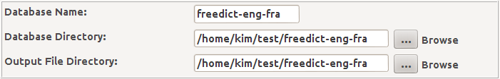
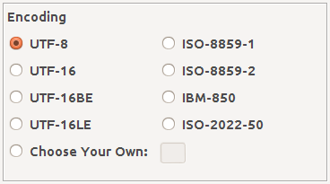
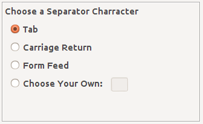
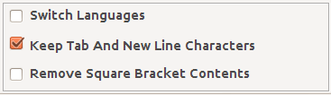
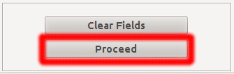
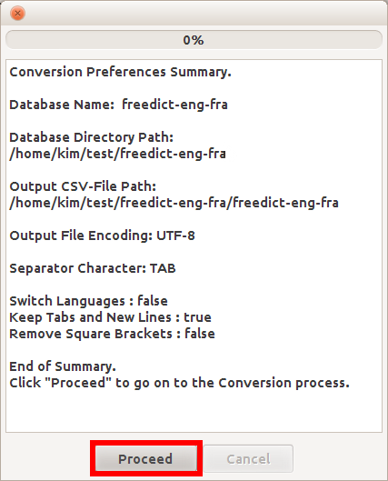

The DictdToDictionaryForMIDs (GUI) Documentation.
Let's see an exemple of how to convert a Dictd dictionary file into an input file for DictionaryGeneration.
Say we have a Dictd dictionary file from freedict.org called freedict-eng-fra that we would like to convert
into the DictionaryForMIDs format. We should follow these steps:
- Make sure we have the files freedict-eng-fra.dict.dz (if the file is compressed)
or freedict-eng-fra.dict (if it's not compressed) and freedict-eng-fra.index
in a directory called freedict-eng-fra. - Create a text file with the name freedict-eng-fra.ini and write the following in it:
# The freedict-eng-fra Database
freedict-eng-fra.data=freedict-eng-fra.dict.dz
freedict-eng-fra.index=freedict-eng-fra.index
Note that if the file is not compressed you should replace the line
freedict-eng-fra.data=freedict-eng-fra.dict.dz
with the line:
freedict-eng-fra.data=freedict-eng-fra.dict
You just created a configuration file that will be used by DictdToDictionaryForMIDs
to convert you input file. The first line (starting with a pound sign) is optional,
it is a comment and therefore is useful only for us (humans, not for the computer).
The second and the third lines are all what we need to get started. - Fill the database name, path and the output directory fields in. Peep the screen
shot below to have an idea about how to do that. You might manually provide the
paths by typing them in, you might also click the browse button to get the directory paths.
 - Choose the character encoding for the output converted CSV dictionary file.
You can choose between the default ones or provide your own by clicking the
Choose My Own button. It is highly recommended though, that you choose
between UTF-8 and ISO-8859-1.
 - Choose a Separator Character.
Here also you can choose between the default ones or provide your own
by clicking the Choose My Own button. A tab character is the recommended choice.
 - Customize the following boolean variables with the CheckBoxes.
- Switch Languages: switches or keeps the languages' order in the output file.
- Keep Tab And New Line Chars: keeps or removes the tabs and the new line characters
- Remove Square Brackets Content: removes or keeps the text within square brackets.
 - Proceed to the conversion process.
Note that before you get to that you will go through the dictionary conversion
preferences summary. By clicking the Proceed button you will go to a window
that will enable you to go to the actual conversion process.

Launching the dictionary conversion preferences summary window
Converting the dictionary file
Hit the Proceed button to convert the dictionary file. If everything goes well you should find the file under the output directory you provided, with the name of the database + '-converted.txt' (i.e freedict-eng-fra-converted.txt)P.S:
There is a known bug during the dictionary conversion (Bug-09062012). It happens during the conversion of some freedict.org bilingual dictionaries. The bug causes DictdToDictionaryForMIDs to write in the converted dictionary file a line like the following:
<pre> java.lang.NullPointerException at org.dict.kernel.Database.readAll(Database.java:395) at org.dict.kernel.Database.defineMatch(Database.java:52) at org.dict.kernel.DictEngine.defineMatch(DictEngine.java:72) at org.dict.kernel.DictEngine.lookup(DictEngine.java:149) (...) at java.lang.Thread.run(Thread.java:722) \n\nAvailable dictionaries: freedict-eng-fra</pre>
This bug will be fixed in a future version of DictionaryForMIDs-Creator. For the time being, the only way to get rid of those nasties is to edit the converted file manually. So, if your input dictionary file is from freedict.org (is a freedict dictionary), open the converted file and remove the line starting from <pre> to </pre> along with all the text between them. Be careful not to delete some text that actually belong to the dictionary.
| Prev | DfM-Creator Home | Next |
| Home | DictionaryGeneration |